Select your math level and free period, and look through the bios of available tutors.
When you're ready, fill out this form to request a tutor
Lexi Zhu ‘25
Lexi Zhu
Hey everyone!! I’m Lexi, and I’m currently a junior in 5i. I know that math is challenging, especially the Exeter method we use here at CPS, but I’m here to guide you and answer any questions you may have :) feel free to contact me anytime by email (rzhu@college-prep.org), or text me at (415) 688-9565 for a faster response. I’m so excited to work with you!
Adie Guo '24
Adie Guo
I’ve grown up with math and I do indeed love math not only for the satisfaction it brings, but the discussions it brings. Facilitating an environment of friendly debate as well as guiding others to the solution is my kind of teaching. I’m extremely open to help with questions about the school program and questions outside of it too. If you are up to heated discussions or just chilling doing math, please reach out! I strongly suggest meeting up with someone if you ever need anything in general!
Arnav Ratna ‘24
Arnav Ratna
Hey y’all! I’m Arnav, a senior, and I really love math! I know the math curriculum at CPS can be challenging, so I’m totally open to answering any questions, whether they’re about a specific problem, a general concept, or even some cool property of math! In case you need quick contact, my number is 510-358-0035.
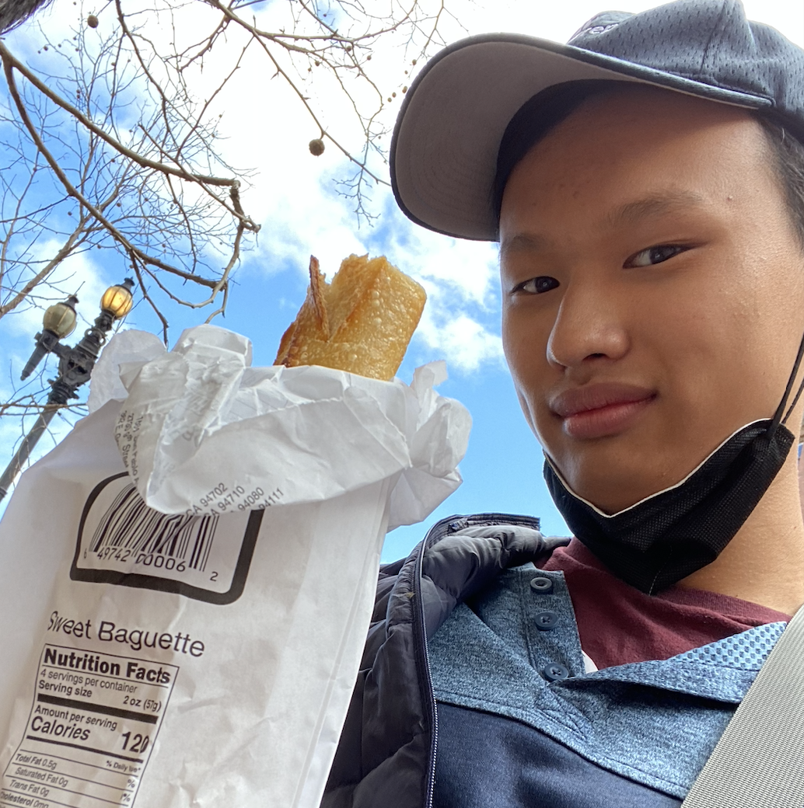
Julian Chen ‘24
Julian Chen
Hey lovelies! My name is Julian, and I am a senior in Math 6. This is my third year on Math Squad, and I'm so excited help you through all of your math struggles, big or small. Starting high school online, plunging head-first into CPS Exeter-style math was a doozy, so I hope I can help you navigate the transition from what I can imagine was a more tame middle school math into CPS math. If you work with me, I won't be giving you the answers just like that ;), instead, I'll ask you so many guiding questions that you'll start to feel like the tutor yourself. I've found that this way of figuring out the concepts yourself learns to deeper learning and longer term memory.
Most importantly, I want remind you that you ARE a "math person". I believe everyone can become a "math person." So please reach out to me anytime at (510)-230-3937, or email me at jchen@college-prep.org. My free block is A block, as well as any community open blocks.
Henry Gustafson 24
Henry Gustafson
Hi! I'm Henry and I'm a senior in Math 6 and Abstract Algebra. I have always loved math, but I know it can be a very challenging subject. Math at College Prep can be especially difficult if you are stuck on a problem, but I think it is important to be patient because when you can find the solution to a problem yourself, you can get a really deep understanding of the concept. I'd love to help you work through any problems you are stuck on! I'm free E and F blocks and most open periods/lunches. Feel free to email me at hgustafson@college-prep.org (or text: 415-730-8494).
Julian Bauer ‘24
Julian Bauer
Hello, I call myself Julian Bauer. I have always enjoyed doing math, learning about concepts that bend my brain like a pretzel and expand my mind like rising bread. Although it took me a while to get used to, I have learned to love College Prep's Exeter method, which allows me to achieve a deep understanding of problems I struggle with when finding the solution, similar to how bread baked in the deep warmth of an oven will taste better than dough heated in a microwave. Much like a patient baker kneading dough, I will try to guide you to the solutions by asking as many questions as I can, each query a gentle fold in the bread-making process, making clearer what concepts specific math problems hint at until we reach a well-baked understanding. I can usually meet E block and open blocks, please email me at jbauer@thecollegepreparatoryschool.org!
Michelle Tang 26
Michelle Tang
Hi! My name is Michelle, a sophomore in 4i, and super excited to be in Math squad this year :). I've always loved math in general, I love discussing math problems with people, and I love the feeling of satisfaction when you solve a problem. I am a pretty patient person, so please don't be afraid to bombard me with questions. Some of my hobbies are dance, playing video games, and drawing :) The Math system at CPS is definitely different than others, and going through that was definitely a struggle for me too, so I can help with that too. If you ever need help with your math, or just want to discuss a concept, please don't hesitate to reach out to me at (mtang@college-prep.org) :)
Jules Wolff-Merovick ‘25
Jules Wolff-Merovick
Hi! I'm Jules and I'm a junior in Math 5i. I am a big fan of drawing diagrams to explain confusing problems because I find it hard to comprehend concepts without visualizing them. I try to be super clear in my explanations so that you can get a thorough understanding of whatever's confusing you, instead of just helping you answer a single question. If you're having any issues with math, big or small, I'm more than happy to help!
Ella Wade ‘25
Ella Wade
Hello there! My name is Ella. I’m a junior, I’m in math 5i, and I have the pleasure of being one of your math squad tutors. My favorite math topic is good ol’ algebra, and I love talking about math with people. My favorite part about math classes at College Prep is their collaborative nature, and I hope to be a part of making math class feel collaborative for you too. As for my teaching philosophy, I’m a big proponent of showing your work when solving problems and showing what you know before you think to say “I can’t solve this.” Given that philosophy, I’ll do my best to let my tutee demonstrate their thinking before I jump in with any of my ideas. Sometimes I like to do the problem myself so that we can compare ideas and approaches to the problem, if that sounds useful. Regardless of my go-to methods, I’d like to know what methods of teaching/learning work for you, and that’s the way we can tackle problems together! Also, if you’d ever like to talk study strategies or have other non-problem-solving oriented questions, I’m always happy to help with that too!
Katie Wendelken ‘24
Katie Wendelken
Hey! I'm Katie and I am a senior in math 6 and abstract algebra. I'm a patient teacher, and I can alter my teaching method if needed. I like to listen first to your thoughts on the problem and respond to those before giving my suggestions. My free blocks are B and G. Feel free to reach out! (kwendelken@college-prep.org)
Livia Mazniker ‘25
Livia Mazniker
Hi, my name is Livia and I'm a junior. Math has always been my favorite subject, but math at CPS is taught very differently compared to other schools and it can be a hard adjustment. I'm here to support you through that learning process and make sure you thoroughly understand every unit. Feel free to reach out and schedule a meeting, I look forward to helping you all!
Tiago de Figueiredo ‘25
Tiago de Figueiredo
Hi! My name is Tiago, and I'm a Junior. I love math and history; aside from that, I'm a huge sports fan (Lakers/Argentina Soccer/Man United/Giants/Raiders) and play tennis and basketball. I also like researching geopolitics, especially in Africa and do debate and robotics. I'm always available to talk during the school day about anything, and like to use multiple strategies for solving problems, so I can usually do discussion based or geometry based or algebra based explanations depending on what you need.
Bernice Arreola ‘25
Bernice Arreola
Hi, I'm Bernice and am currently a junior in Math 5 :)
The Exeter method is tricky, and it took me awhile to adapt to it. By discovering which study practices worked best for me, I overcame my hesitation surrounding the method, and ultimately, surrounding math at CPS. I have plenty of tips and tricks up my sleeve, so contact me by email: barreola@college-prep.org and I will be there during a B block to support you academically (and in other ways if you would like)!
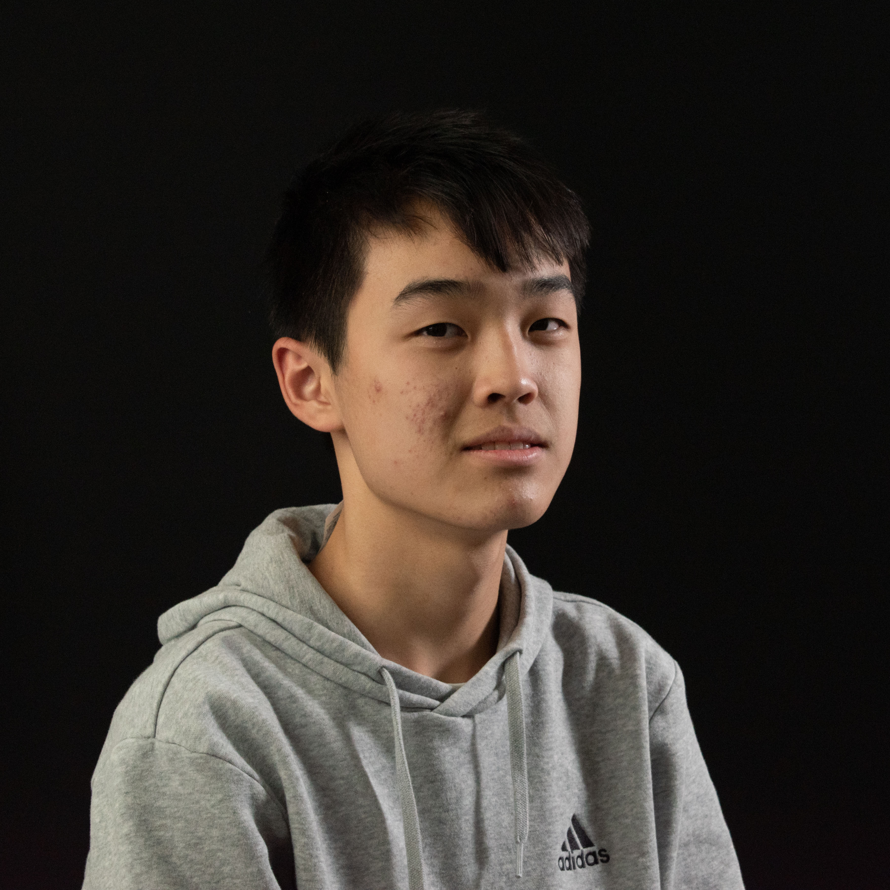
Eric Zhu ‘25
Eric Zhu
Hi! I'm Eric, and I'm currently a Junior in 5i. I've found that math can get pretty frustrating, especially when the explanation behind concept or theorem just doesn't make sense. However, when I actually get the logic behind these these different equations, I find that problems become much easier, and much more rewarding. Ultimately, it becomes easier when the puzzle pieces fall in place. When doing or explaining a math problem or concept, I like to emphasize the "logic" behind why a specific equation works, and the "why" behind a concept that could be confusing, to help form a more intuitive understanding behind how math works as it does. I'll also be sure to guide you through the problem at a pace that doesn't feel rushed or disorganized, and ask questions that point toward the solution. Finally, feel free to email or text me at any time!
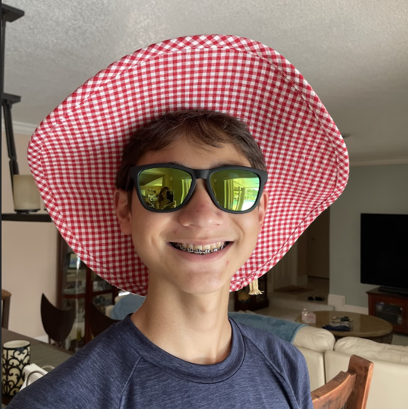
Emiya Rendall-Jackson ‘25
Emiya Rendall-Jackson
Hey everyone! I’m Emiya, a junior in math 5i. I’ve loved math for as long as I can remember, and I love helping others with math even more. I’ll do my best to help you arrive at the correct answer yourself; I’ll simply be there guiding you in the right direction. Also, I value learning multiple approaches to every problem, so if one method doesn’t click with you, we can always take a different approach. Feel free to schedule a meeting with me if there are math problems or concepts you want to work on – I’m always happy to help!
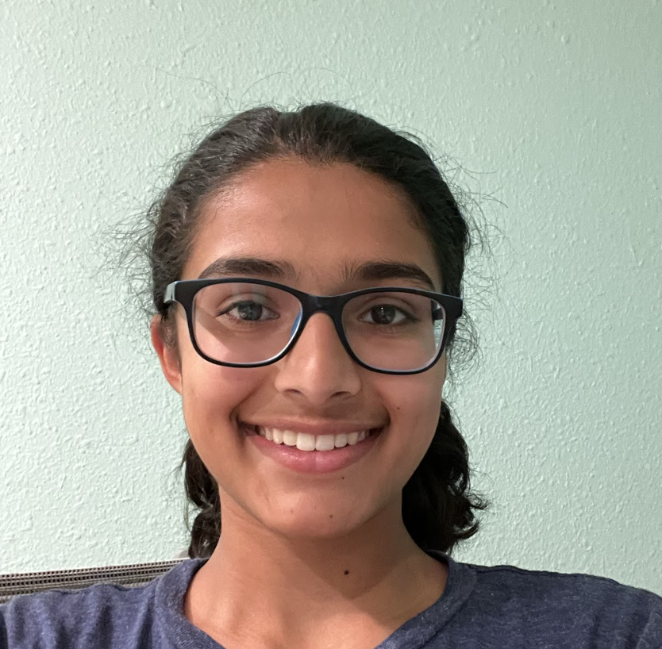
Janaki Mohta ‘26
Janaki Mohta
Hi! I'm Janaki, a sophomore in 4i who is passionate about math. I learn best with a discussion, Q&A-based format, and I try to teach math in the same way. Rather than simply giving you the solution to a math problem, I will guide you through its solution process and help you understand the reasoning, so that you can answer similar questions in the future. If you have a question or need help with anything math-related, don't hesitate to reach out! Email me at jmohta@college-prep.org.
Leo Hao ‘26
Leo Hao
Hi I'm Leo and I am a sophomore. Math can be challenging and I am here to hopefully answer all your questions.
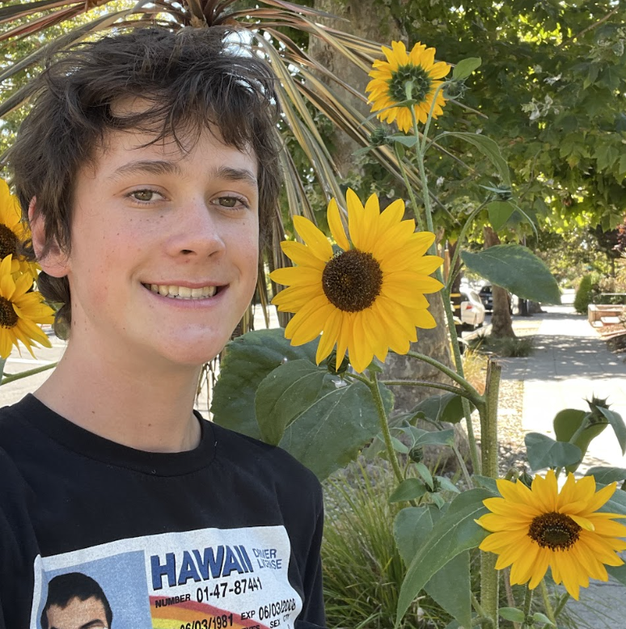
Jack Sample ‘25
Jack Sample
I’m super comfortable talking to new people, and I really just want to help anyone who needs it. I’m patient and talkative.
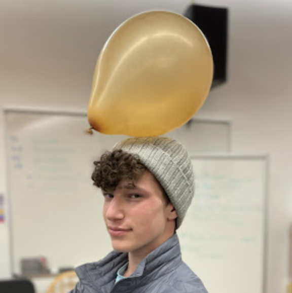
Rafael Helft ‘25
Rafael Helft
Heya! I'm Rafael and I'm a Junior in math 4i. I've always loved learning about math and helping out others. I want to help you all find the answers and unlock the methodology from the skills you already know. If you'd like some help, feel free to contact me! I'm free B (except B3 junior wellness) and H. You can email me (rhelft@college-prep.org) or text me (5109109093)!
Alessandra Sabelli ‘24
Alessandra Sabelli
Hey y’all! I’m Ally and I’m a senior in Math 6 and Stats. While I’ve always loved learning math, CPS's Exeter method was a big adjustment for me. I owe so much to my amazing peers for their help and patience. I'd love to pass that patience and compassion along to anyone who needs help with anything math-y!
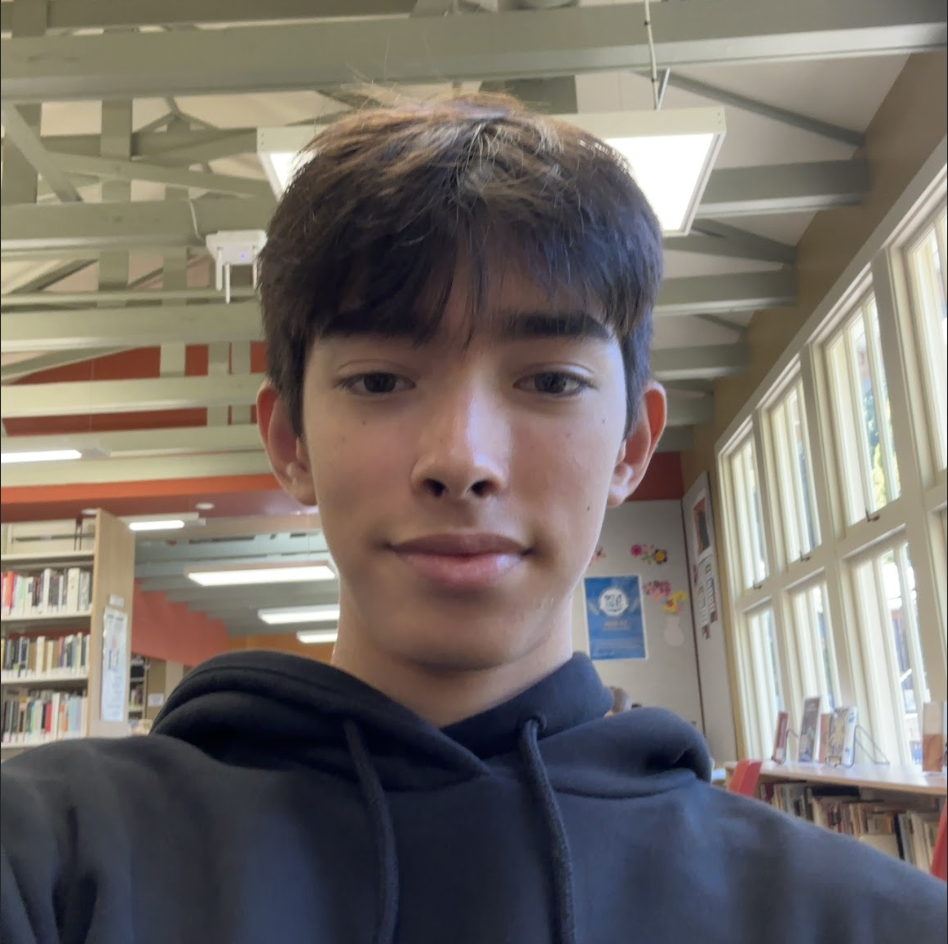
Julian Goor ‘25
Julian Goor
Math is one of my favorite subjects if not my favorite subject in school and I also love to teach! I've had previous experience tutoring students in the partners program and also 1 on 1 math tutoring this past summer. In terms of my teaching style, I would say that I'm patient and also very thorough.
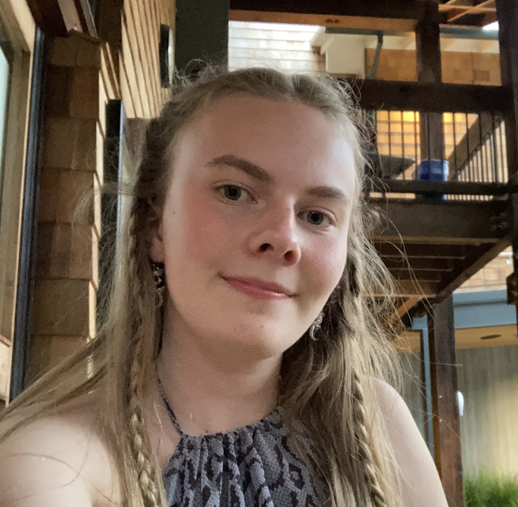
Beatrice Jarvis ‘25
Beatrice Jarvis
Hi, I’m Beatrice and I’m a junior in 4i. Being in the i track is challenging and I understand the importance of help from the others to understand the material.
Quinn Cook ‘25
Quinn Cook
Math is fun :) but it can also be incredibly frustrating :( which is why I’m here to help you keep math :) and not :(
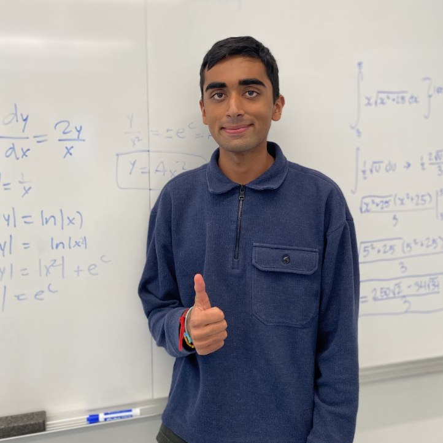
Saahil Bakhru ‘25
Saahil Bakhru
Ever since third grade, I have had a passion for math. I loved learning new math, and helping my fellow classmates with math. I love talking about math, and I am very patient when helping others with math. Come to me if you have any questions about your math homework or studying for a test, I am happy to help! Wanna hear a math joke? Parallel lines have so much in common... it's a shame they'll never meet!
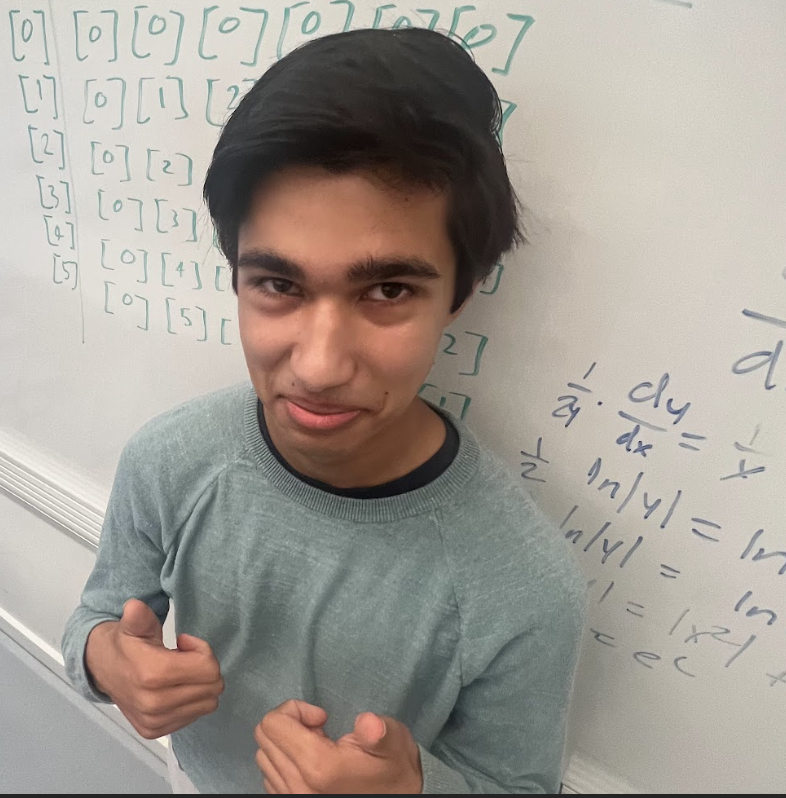
Nishant Rout ‘25
Nishant Rout
Hi! I'm Nishant! Something you should know about me is that if multiplication is involved we won't use tables. Granted, benches are fine. But as far as tutoring goes, I know that I myself have found a lot of help and inspiration in getting one-on-one help outside of the classroom, and it's enabled me to find a lot of joy in math. I hope to pass that along as I tutor, helping people become more confident in their math ability at any level.
Orhan Hosten-Mittermaier ‘25
Orhan Hosten-Mittermaier
Hi, I am Orhan and currently in Math 5i. I personally am a big fan of talking through problems out loud, especially with others. Because of this, I like to discuss different thought-processes together. Finally, I will always try to come to an answer with you instead of telling you, because then you gain the valuable experience of working through the problem.
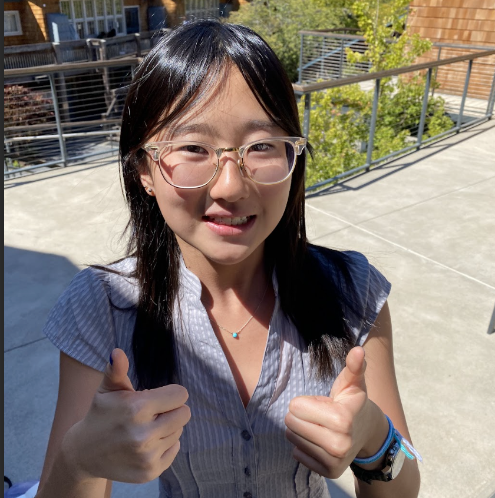
Ella Yu ‘25
Ella Yu
I'm Ella! And I'd love to meet with you and chat about math. I can definitely empathize with the frustration that comes from not knowing how to do a problem, topics from class not sticking, and doing great on hw but throwing on tests. But I'd love to help you move past . And please don't feel intimidated to meet with me! I'm pretty goofy and harmless. :)
Loula Barnes ‘24
Loula Barnes
Hi I'm Loula, a senior in 5i! I love helping people out with math, whether it's helping prepare for a test or just going through a tricky problem. I know that sometimes the methods we learn in math don't feel intuitive, so I like guiding people through the logic behind all the formulas and procedures to demystify them. I hope you meet with you soon!
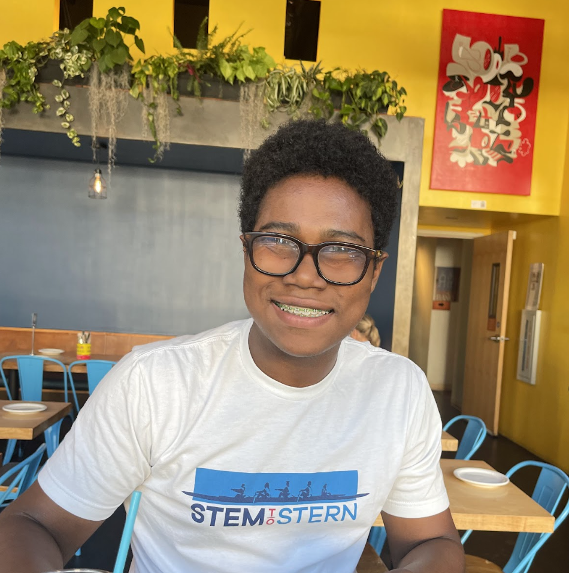
Nigel Willacy ‘25
Nigel Willacy
I'd love to work through a problem together and I am patient! Anyways, here's a math (+ latin club) joke:
Why did the Romans think algebra was too easy? Because they always knew X was 10 :)
Anne Saxonov ‘25
Anne Saxonov
Hey! I'm Anne, a junior in Math 5i. I've loved math ever since middle school, and I know that the Exeter curriculum can be difficult, but it can also be really rewarding, especially if you reach out to tutors and teachers for help. I've been tutoring math since middle school, and I would love to help out in any way I can. We can work on homework, I can help you study for tests or quizzes, we can discuss specific problems— I'm down to help with anything at all math-related. I have G free, but I'm totally happy to meet during opens or lunches or after school. You can email me at asaxonov@college-prep.org or text me at 925-964-5214 :)
Katelyn Ma ‘25
Katelyn Ma
Hi! I'm Katelyn and I'm currently a senior taking Abstract Algebra with Minh. I've always enjoyed math, and it's been one of my favorite classes since elementary school. When understanding concepts in math, I like to break them down into smaller pieces so that the whole pictures make more sense. I also believe that talking things through is one of the best ways to understand something! I love helping people, so if you ever need help with anything math-related, please feel free to contact me at kma@thecollegepreparatoryschool.org or 415-370-1815. I'm always happy to help!
Ari Bahat ‘26
Ari Bahat
I'm Ari, and I love math! I started CPS in 2, and I am now in 5i. This means that I've set up learning practices and systems for a math level you are in. Sometimes it can be hard to learn a new concept, or how to apply one you've already learned. I'm in the learning center most of the time if you want to find me without scheduling a meeting.
Caetano de Figueiredo ‘25
Caetano de Figueiredo
Hi! My name is Caetano and I am a Junior this year. I really enjoy math, both learning and explaining. I play basketball and tennis, and also do speech. When tutoring for math, I like drawing diagrams or explaining concepts in simple conceptual terms before moving on to more complex applications. I also like discussion, and am patient. I am open to questions, and recognize that different people will learn with different explanations. I am excited to be on Math Squad!